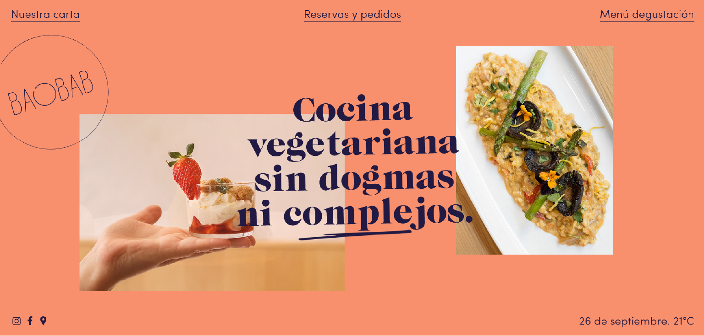

- Tipografía: Influye en que la lectura sea más agradable, usan letras grandes en títulos y menús para captar la atención del usuario. Se emplean letras sencillas.
- Color: Predominan el rojo y el amarillo, colores que según la psicología del color transmiten energía, hambre y luminosidad.
- Espacios: Se utiliza el espacio en blanco para organizar los elementos, lo que ayuda a que el usuario identifique con rapidez el contenido importante.
- Imágenes: Generan un impacto visual que apoyan al contenido de la comida sin sobrecargar la interfaz.
- Perfil de usuario al que va destinado: Se destina a un público amplio, aunque principalmente a jóvenes que son los que más consumen este contenido. Buscan rapidez, facilidad de uso y atracción con sus colores.

- Tipografía: Se encuentra alineada con el tono de la marca, diferenciándose en la fuente más elegante que transmite sofisticación.
- Color: Son más armónicos que la web anterior. Usa tonos cálidos que transmiten calma, confianza y cercanía.
- Espacios: Está bien organizada por lo que se resalta la información principal (menú, filosofía, reservas) sin sobrecargar la vista.
- Imágenes: Se muestran fotografías de los platos y del ambiente, que refuerzan la experiencia visual y transmiten calidad.
- Perfil de usuario al que va destinado: Se dirige a un público más adulto, que busca una experiencia distinta. Los aspectos anteriores no buscan la inmediatez como la otra web.

- Tipografía: Emplea tipografías modernas, elegantes y minimalistas, lo que refleja exclusividad y sofisticación.
- Color: Predomina el rojo, color característico de Ferrari, combinado con negro y blanco. Transmite pasión, energía y la elegancia y mencionada.
- Espacios: Amplios espacios en blanco que permiten destacar imágenes y textos clave.
- Imágenes: Las de los coches se muestran en gran formato, lo que genera impacto.
- Perfil de usuario al que va destinado: Público adulto con gran cantidad de ingresos, interesado en el lujo e innovación.

- Tipografía: Utiliza fuentes limpias y modernas, que transmiten innovación y sencillez.
- Color: Predominan tonos blancos, grises y azules, es decir, transmiten pureza, orden, confianza y tecnología.
- Espacios: Hace un uso amplio del espacio en blanco y centra la atención en el coche eléctrico y sus características.
- Imágenes: Grandes y de alta calidad que refuerzan la idea de innovación y diseño cuidado.
- Perfil de usuario al que va destinado: Público adulto, interesado en la tecnología, la sostenibilidad y la movilidad eléctrica.

- Tipografía: Utiliza fuentes elegantes, que pese a ser limpias con algo más redondeadas.
- Color: La web se sustenta en el blanco y el negro, pero está salpicada de color gracias a las fotografías y los detalles en color fucsia. Que estos colores tan llamativos se encuentren sobre un fondo blanco o negro los hace destacar mucho más.
- Espacios: amplios, la web carece de saturacion ya que dejan un gran espacio entre cada elemento, facilita su lectura y ayuda a que el usuario no se pierda.
- Imágenes: Grandes y claras, se centran mucho en las modelos, sin muchos detalles que impidan su correcta lectura.
- Perfil de usuario al que va destinado: Mujeres con altos ingresos que realizan compras online, la web está claramente pensada para ser visitada en un teléfono móvil.
- Tipografía: Elegante y clara, parecida a la anterior
- Color: Sustentada en el blanco y negro, con toques de azul marino en las imágenes.
- Espacios: Amplios, llenos de espacios en blanco, la web carece de saturacion ya que dejan un gran espacio entre cada elemento, facilita su lectura y ayuda a que el usuario no se pierda.
- Imágenes: Imágenes de productos simples, sin modelos a excepción de Jhonny Deep.
- Perfil de usuario al que va destinado: Hombres maduros con altos ingresos económicos,la web está claramente pensada para ser visitada en un teléfono móvil.